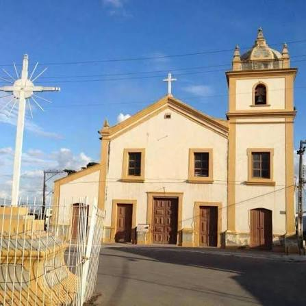
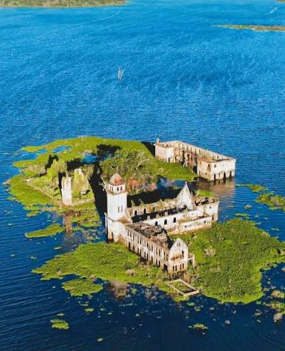
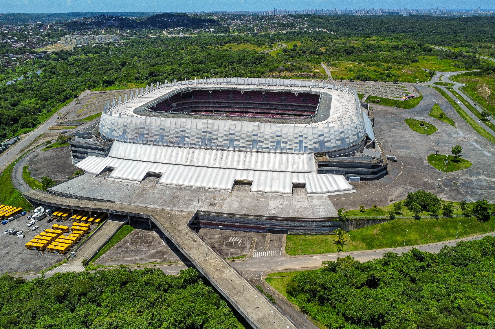

São Lourenço da Mata, localizada em Pernambuco, é uma terra rica em história,
cultura, patrimônio e belezas naturais . Aqui, exploramos a essência do município
e descobrimos os seus lugares mais encantadores.
PARA AMANTES DE HISTÓRIA
Descubra 3 destinos imperdíveis em São Lourenço da Mata
As atrações de São Lourenço da Mata vão desde a igreja Matriz de Nossa Senhora da Luz, até áreas de preservação ambiental e riqueza cultural.
O município reserva experiências únicas para quem deseja explorar as belezas e paisagens pernambucanas.

1. Igreja Matriz de Nossa Senhora da Luz
Com 486 anos de história, a Igreja Matriz é um dos monumentos religiosos e arquitetônicos mais antigos do estado. Localizada no destrito de Matriz da Luz, é um patrimônio
histórico imperdível no município.
Bom para:
História

2. Barragem de Tapacurá
Um reservatório imponente cercado por vegetação nativa e rica biodiversidade. Quando o nível de água baixa, é possível avistar as ruínas da antiga Colégio e Igreja de São Bento, submersas na barragem.
É um lugar ideal para se conectar com a natureza e registrar belas fotos.
Bom para:
Natureza

3. Arena Pernambuco
Palco de grandes jogos de futebol e eventos culturais, este complexo multiuso moderno traz
dinamismo e destaca o muicípio no cenário esportivo e de entretenimento em Pernambuco.